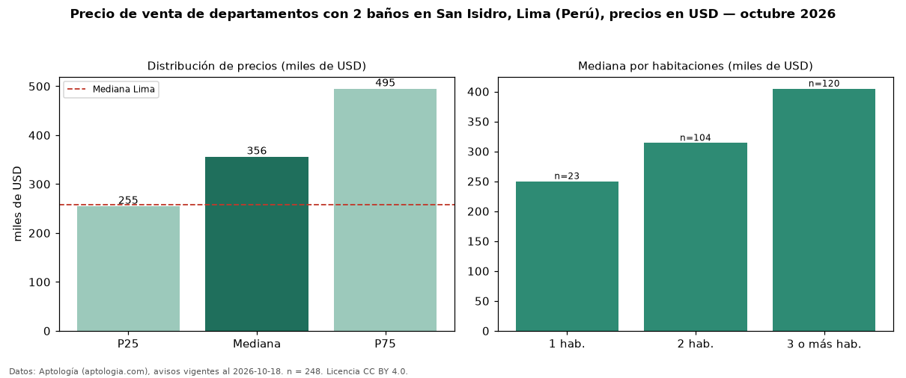

Precio de venta de departamentos con 2 baños en San Isidro, Lima (Perú), precios en USD — octubre 2026
Con 248 avisos vigentes, el precio mediano de departamentos con 2 baños en venta en San Isidro, Lima (Perú) es USD 356.000. Frente a la mediana de todos los departamentos en venta de San Isidro (USD 435.500, n = 588), queda 18 % por debajo; este segmento reúne el 42 % de esos avisos. Por metro cuadrado, la mediana es USD 2.938/m² (n = 246), 0 % por debajo del conjunto de referencia (USD 2.948/m²). El área mediana anunciada es 130 m². El segmento con más oferta es el de 3 o más habitaciones (120 avisos, mediana USD 404.719); pasar de 1 habitación a 3 o más habitaciones cambia la mediana +62 %. La mitad central de los avisos va de USD 254.750 a USD 494.915 (razón 1,9), una dispersión moderada. La mediana de todos los departamentos en venta de Lima es USD 258.023 (+38 % de diferencia). Datos: Aptología (aptologia.com), CC BY 4.0 — https://www.aptologia.com/pe/venta/lima/san-isidro. Archivos: PDF, CSV con las cifras y gráfica PNG.

| Avisos únicos | 248 |
|---|---|
| Percentil 25 | COP 254.750 |
| Mediana | COP 356.000 |
| Percentil 75 | COP 494.915 |
| Mediana por m² | COP 2.938 |
Fuente: avisos vigentes de portales inmobiliarios recopilados por Aptología, deduplicados (mínimo 30 avisos únicos por celda). Precios pedidos, no cerrados. Fecha: 2026-10-18.